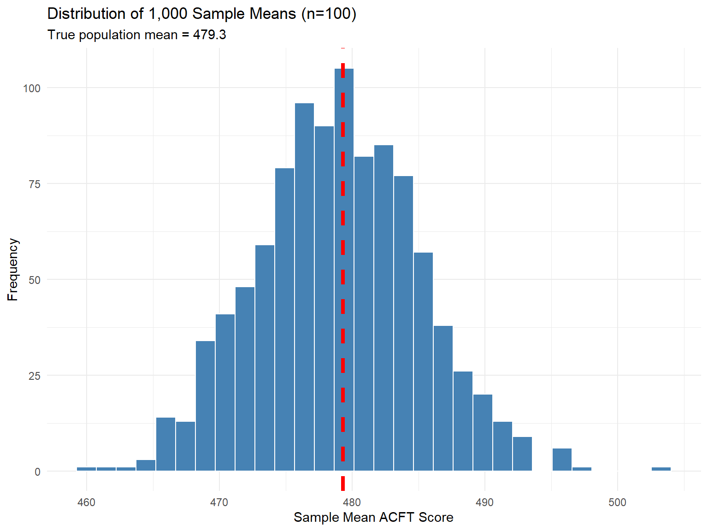

| Aspect | Observational Study | Designed Experiment |
|---|---|---|
| Treatment Assignment | Researcher observes naturally occurring groups | Researcher randomly assigns treatments |
| Causation | Cannot establish | Can establish (if well-designed) |
| Confounding | Difficult to control | Controlled through randomization |
| Typical Goal | Describe associations | Establish cause-effect |
| Example | Surveying soldiers about sleep and APFT scores | Randomly assigning soldiers to different sleep schedules |
Lesson 2: Sampling & Study Design
MA206X: Probability and Statistics
0.1 Learning Objectives
By the end of this lesson, you will be able to:
- Contrast observational studies and designed experiments
- Describe common sampling methods and potential biases
- Explain why randomization and control strengthen inference
Reading: Devore 1.2
1 Introduction
In Lesson 1, we learned to distinguish populations from samples. Now we address the critical question: How do we collect data that leads to valid conclusions?
The way we collect data fundamentally determines:
- What questions we can answer
- How confident we can be in our conclusions
- Whether we can establish cause-and-effect relationships
2 Observational Studies vs. Designed Experiments
2.1 Observational Studies
Definition: Observational Study
An observational study observes individuals and measures variables of interest without attempting to influence the responses.
Key characteristic: The researcher does not assign treatments or interventions.
Strengths:
- Can study factors that would be unethical to manipulate
- Often less expensive and faster
- Can observe real-world behavior
Limitations:
- Cannot establish causation (only association)
- Confounding variables may influence results
- Subject to various biases
2.2 Example 2.1: Observational Study
Research Question: Do cadets who eat breakfast perform better academically?
Study Design: Survey 500 cadets about their breakfast habits and obtain their GPAs from the registrar.
Finding: Cadets who regularly eat breakfast have a 0.3 higher average GPA.
Can we conclude breakfast causes higher GPA?
No! Other factors (confounders) might explain this:
- More disciplined cadets both eat breakfast AND study more
- Athletes (who tend to eat breakfast) may have different academic profiles
- Morning classes might influence both breakfast habits and performance
2.3 Designed Experiments
Definition: Designed Experiment
A designed experiment deliberately imposes treatments on individuals and observes their responses.
Key characteristics:
- Researcher assigns treatments
- Includes randomization
- Often includes a control group
Strengths:
- Can establish cause-and-effect relationships
- Control for confounding variables
- Allows for replication
Limitations:
- May be expensive or time-consuming
- Some treatments are unethical to assign
- Artificial settings may not reflect real-world conditions
2.4 Example 2.2: Designed Experiment
Research Question: Does a new training program improve ruck march performance?
Experimental Design:
Randomly assign 100 soldiers to two groups:
- Treatment group (n=50): New training program
- Control group (n=50): Standard training program
After 8 weeks, measure 12-mile ruck march times for all soldiers
Compare average times between groups
Why randomization matters: Random assignment ensures that other factors (fitness level, age, experience) are balanced between groups on average. Any difference in performance can be attributed to the training program.
2.5 Key Comparison
3 Sampling Methods
When we cannot study an entire population, we need a sampling method that produces a representative sample.
3.1 Simple Random Sampling (SRS)
Simple Random Sample
A simple random sample of size \(n\) consists of \(n\) individuals from the population chosen in such a way that every set of \(n\) individuals has an equal chance of being selected.
Key property: Every individual has an equal probability of selection.
How to obtain an SRS:
- Create a sampling frame: complete list of all individuals in the population
- Assign each individual a unique number
- Use a random number generator to select \(n\) numbers
- Sample the individuals corresponding to those numbers
3.2 Example 2.3: Simple Random Sampling in R
Let’s simulate selecting a random sample of 10 cadets from a company of 120:
Code
# Set seed for reproducibility
set.seed(206)
# Create sampling frame: C-numbers for 120 cadets
population <- sprintf("C%05d", 90001:90120)
# Draw a simple random sample of size 10
sample_srs <- sample(population, size = 10, replace = FALSE)
# Display the selected cadets
sample_srs [1] "C90047" "C90034" "C90085" "C90050" "C90063" "C90084" "C90058" "C90033"
[9] "C90008" "C90100"Every cadet had a \(\frac{10}{120} = 0.0833\) (8.33%) chance of being selected.
3.3 Stratified Random Sampling
Stratified Random Sample
Stratified sampling divides the population into homogeneous groups (strata), then takes an SRS from each stratum.
When to use: When you want to ensure representation from important subgroups.
Advantages:
- Guarantees representation from each stratum
- Can reduce sampling variability
- Allows separate analysis by stratum
3.4 Example 2.4: Stratified Sampling
Goal: Survey cadets about online learning preferences, ensuring each class is represented.
Population: 4,400 cadets (1,100 per class)
Stratified Design:
- Stratum 1: Firsties (1,100 cadets) → Sample 50
- Stratum 2: Cows (1,100 cadets) → Sample 50
- Stratum 3: Yuks (1,100 cadets) → Sample 50
- Stratum 4: Plebes (1,100 cadets) → Sample 50
Total sample size: 200 cadets
Code
set.seed(206)
# Create population with class labels
class_year <- rep(c("Firstie", "Cow", "Yuk", "Plebe"), each = 1100)
cadet_id <- sprintf("C%05d", 1:4400)
population_df <- tibble(cadet_id, class_year)
# Stratified sampling: 50 from each class
stratified_sample <- population_df %>%
group_by(class_year) %>%
slice_sample(n = 50) %>%
ungroup()
# Verify sample sizes per stratum
stratified_sample %>%
count(class_year) %>%
kable() %>%
kable_styling(bootstrap_options = c("striped", "hover"))| class_year | n |
|---|---|
| Cow | 50 |
| Firstie | 50 |
| Plebe | 50 |
| Yuk | 50 |
3.5 Convenience Sampling
Convenience Sample
A convenience sample consists of individuals who are easily accessible to the researcher.
Major problem: This is NOT a probability-based sampling method and often leads to biased results.
3.6 Example 2.5: Convenience Sampling Bias
Scenario: You want to estimate average cadet satisfaction with dining facilities.
Convenience sample: Stand in Washington Hall at dinner and survey the first 100 cadets you see.
Problems:
- Only captures cadets who eat dinner in Washington Hall
- Misses cadets who avoid DFAC due to dissatisfaction
- Time of day affects who you encounter
- May overrepresent certain companies or teams
Better approach: SRS or stratified sample from complete cadet roster
3.7 Comparison of Sampling Methods
| Method | Description | Pros | Cons | Generalizable? |
|---|---|---|---|---|
| Simple Random | Every individual has equal probability | Unbiased, straightforward | May miss subgroups by chance | Yes |
| Stratified Random | Random sample from each subgroup | Ensures subgroup representation | Requires knowledge of strata | Yes |
| Cluster | Randomly select groups, sample all within | Cost-effective for dispersed populations | Higher variability within clusters | Yes |
| Systematic | Select every kth individual from a list | Simple to implement | Can introduce bias if pattern in list | Usually |
| Convenience | Select easily accessible individuals | Quick and cheap | Highly biased, non-representative | No |
4 Common Sources of Bias
Even with good sampling methods, bias can creep into studies. Understanding these threats helps us design better studies and critically evaluate research.
4.1 Selection Bias
Selection Bias
Selection bias occurs when the method of selecting subjects causes the sample to differ systematically from the population.
Examples:
- Online surveys (exclude those without internet access)
- Volunteer samples (self-selected individuals may differ)
- Survivor bias (only studying survivors of a process)
4.2 Response Bias
Response Bias
Response bias occurs when the method of data collection influences the responses given.
Common types:
Social desirability bias: Respondents give socially acceptable answers rather than truthful ones
Example: Cadets over-reporting study hours to appear diligent
Question wording effects: How a question is phrased influences responses
Example: “Do you support protecting freedom?” vs. “Do you support restricting speech?”
Interviewer effects: Characteristics of the interviewer influence responses
4.3 Nonresponse Bias
Nonresponse Bias
Nonresponse bias occurs when individuals selected for the sample do not respond, and non-responders differ systematically from responders.
Example: Email survey with 30% response rate. If those who don’t respond have different views than those who do, results will be biased.
Mitigation strategies:
- Follow-up with non-responders
- Offer incentives
- Make surveys brief and convenient
- Compare responders to known population characteristics
5 Principles of Experimental Design
Well-designed experiments incorporate three key principles:
5.1 1. Control
Control
Control means keeping all variables except the treatment the same across groups.
Helps isolate the effect of the treatment from other factors.
Methods:
- Control group: Group receiving standard treatment or placebo
- Control variables: Measure and account for confounding variables
- Matched pairs: Create pairs of similar subjects, assign different treatments
5.2 2. Randomization
Randomization
Randomization means using chance to assign subjects to treatment groups.
Purpose: Balance out confounding variables across groups on average.
Why it matters:
Code
set.seed(42)
# Suppose we have 100 soldiers with varying fitness levels
soldiers <- tibble(
id = 1:100,
fitness_score = rnorm(100, mean = 250, sd = 30)
)
# Random assignment to treatment/control
soldiers <- soldiers %>%
mutate(group = sample(rep(c("Treatment", "Control"), each = 50)))
# Check that randomization balanced fitness scores
soldiers %>%
group_by(group) %>%
summarize(
n = n(),
mean_fitness = round(mean(fitness_score), 1),
sd_fitness = round(sd(fitness_score), 1)
) %>%
kable() %>%
kable_styling(bootstrap_options = c("striped", "hover"))| group | n | mean_fitness | sd_fitness |
|---|---|---|---|
| Control | 50 | 251.5 | 29.3 |
| Treatment | 50 | 250.5 | 33.3 |
The groups have similar average fitness despite random assignment!
5.3 3. Replication
Replication
Replication means:
- Applying each treatment to multiple subjects
- Repeating the entire study to verify findings
Why it matters:
- Larger samples reduce the role of chance variation
- Repeated studies build confidence in conclusions
- Allows assessment of generalizability
6 Designing a Study: Putting It All Together
6.1 Example 2.6: Designing an Experiment
Research Question: Does a new marksmanship training app improve rifle qualification scores?
Bad Design (Observational):
- Let soldiers choose whether to use the app
- Compare qualification scores between users and non-users
- Problem: Self-selection! Motivated soldiers might both use app AND practice more
Good Design (Experimental):
Subjects: 200 soldiers from the same battalion
Randomization: Randomly assign to two groups:
- Treatment (n=100): Use app for 4 weeks
- Control (n=100): Standard practice for 4 weeks
Control:
- Same total practice time for both groups
- Same rifles and ammunition
- Same qualification course and graders
- Same time of year
Response variable: Qualification score (Marksman/Sharpshooter/Expert)
Analysis: Compare score distributions between groups
Why this design is better:
- Random assignment balances confounders (motivation, prior skill, etc.)
- Control group allows comparison
- Sufficient replication (100 per group)
- Can establish causation if difference is found
7 Simulation: The Power of Random Sampling
Let’s demonstrate why random sampling works:
Code
set.seed(206)
# Create a population of 10,000 soldiers with a known mean ACFT score
population_acft <- tibble(
soldier_id = 1:10000,
acft_score = rnorm(10000, mean = 480, sd = 60)
)
# True population mean
true_mean <- mean(population_acft$acft_score)
# Take 1000 different random samples of size 100
sampling_distribution <- tibble(
sample_number = 1:1000,
sample_mean = map_dbl(1:1000, ~mean(sample(population_acft$acft_score, 100)))
)
# Plot the distribution of sample means
ggplot(sampling_distribution, aes(x = sample_mean)) +
geom_histogram(bins = 30, fill = "steelblue", color = "white") +
geom_vline(xintercept = true_mean, color = "red", linewidth = 1.5, linetype = "dashed") +
labs(
title = "Distribution of 1,000 Sample Means (n=100)",
subtitle = paste("True population mean =", round(true_mean, 1)),
x = "Sample Mean ACFT Score",
y = "Frequency"
) +
theme_minimal()
Key insight: Most sample means cluster around the true population mean! This is why random sampling works.
8 Practice Problems
8.1 Practice 2.1
Identify whether each study is observational or experimental. If experimental, identify the treatment and control groups.
Researchers compare injury rates between soldiers who wear different boot brands.
A study randomly assigns half of a company to a new PT program and compares ACFT scores after 6 weeks.
Medical researchers examine the relationship between sleep duration and reaction time by surveying soldiers.
Cadets are randomly assigned to study either in groups or individually, then take the same exam.
8.2 Practice 2.2
For each sampling scenario, identify:
- The sampling method used
- Potential sources of bias
- Whether results can be generalized to the population
To assess cadet satisfaction, researchers email a survey to all 4,400 cadets and analyze the 800 responses received.
To estimate average ruck march time, a researcher randomly selects 5 companies, then times all soldiers in those companies.
To study academic performance, researchers randomly select 50 cadets from each of the four classes.
8.3 Practice 2.3
Design an experiment to answer this question: “Does listening to music during study sessions improve exam performance?”
Include in your design:
- Subjects and sample size
- Treatment and control groups
- How randomization will be implemented
- What variables will be controlled
- How you will measure the response
9 Summary
Key Takeaways:
Observational studies observe naturally occurring differences; experiments impose treatments
Random sampling ensures every individual has a known probability of selection, enabling generalization
Common sampling methods:
- Simple random sampling (SRS)
- Stratified sampling
- Convenience sampling (avoid when possible!)
Sources of bias to watch for:
- Selection bias
- Response bias
- Nonresponse bias
Good experimental design requires:
- Control (isolate treatment effects)
- Randomization (balance confounders)
- Replication (reduce chance variation)
In Lesson 3, we’ll learn how to describe and summarize the data we collect using measures of location.
10 Additional Resources
- Devore Section 1.2
- Understanding Statistical Power
- WebAssign practice problems on sampling and study design